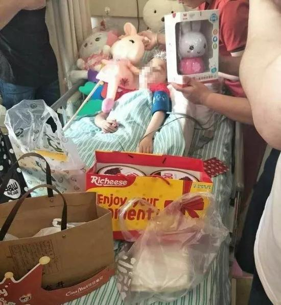

泪目！6岁小天使离开人间，两位叔叔替她去看了北极熊……
网易新闻07-2514:04
（原标题：泪目！6岁小天使离开人间，两位叔叔替她去看了北极熊……）
北极熊的屁股圆滚滚，尾巴短小得不太看得出来，它正在水边踱步……两个老男人趴在玻璃墙上看得入迷，一直看到眼泪都出来了。
他们，是替一个孩子看的。
7月15日凌晨，6岁小女孩菲菲（化名）因患脑干肿瘤去世。在她最后的日子里，父母艰难决定：既然女儿留不住，就把希望留给别人。菲菲留下了眼角膜、大脑和遗体。
24日，两位受捐人一起来到杭州长乔极地海洋公园看北极熊，这是小女孩最后的愿望。
3月下旬，丽水松阳，6岁女孩菲菲突然发现，好像有东西糊了眼
这个大山里的小女孩第一次出远门来到杭州的大医院，被确诊为脑干肿瘤，恶性，晚期。
父母想不通菲菲怎么会得这个凶险的病。他们想，如果研究女儿，对研究此类病症有帮助，是件好事情。家人联系了杭州红十字器官捐献协调员朱强荣。
菲菲最后的日子里，在江苏六安，60岁的老陈眼疾严重。医生说，角膜变性太厉害，再过一年半载，眼睛不保。五十出头的诸暨老斯，同样在混沌世界中惊惶。
7月15日凌晨，手机铃声把朱强荣惊醒。
每个见过菲菲的人都说，菲菲的眼睛亮得像天上的星星。这天凌晨，星星暗了。她穿着红色公主裙，身边躺着她最爱的北极熊玩偶。

两位叔叔的儿女们都说，以后要多带父亲去看看菲菲喜欢的东西。并且，他们也都填了遗体捐献志愿书。
此后，记者给菲菲的爸爸打了个电话，告诉他，我们替菲菲去看过北极熊了。
他很久很久没出声，最后说，谢谢。
查看原文<<